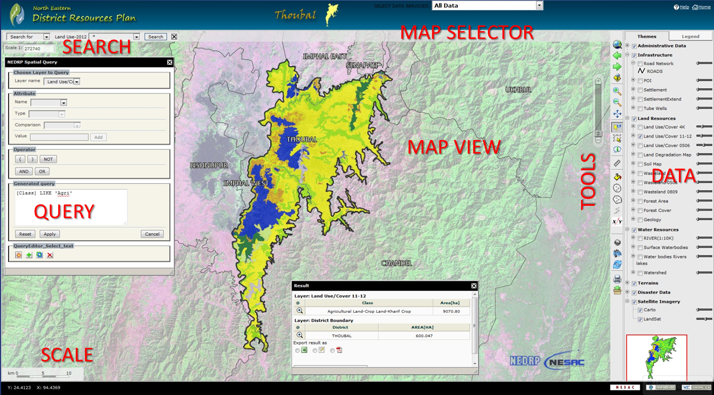
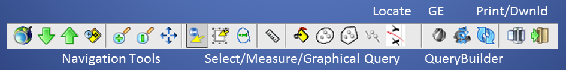
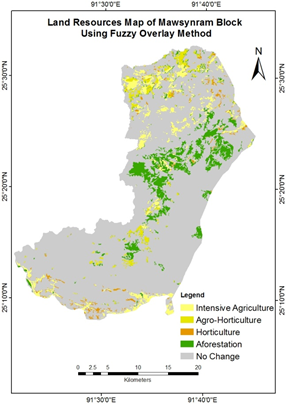
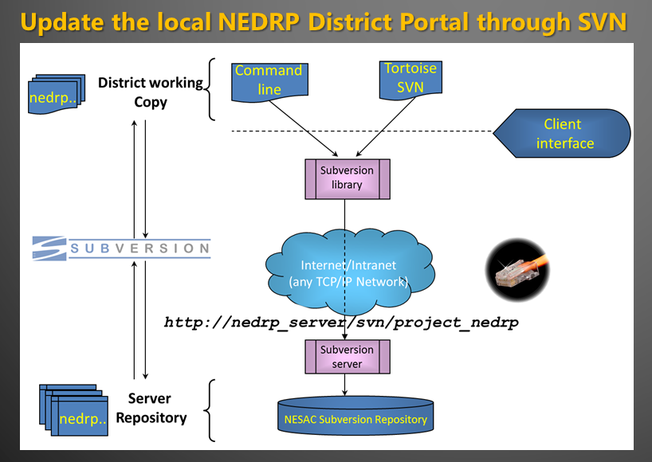

http://nesac.gov.in
http://nesac.gov.in
1. Availability of all spatial database in a single window platform for Natural Resource Monitoring and management in Standalone/Offline Systems
2. Generation of need based location specific geospatial inputs for land and water resources Action plans
3. Development of need and demand based customization of GeoPortals for each Districts and use of geospatial inputs for preparation of Detailed Project Reports and planning of various developmental activities at district/state level
Most of the areas in NER has very limited or no Internet connectivity
"The low tele-density and the low Quality of Services (QoS)"
"Poor Quality of Existing transmission bandwidth at District HQs"
[K Malakar (2015).Status of Telecommunication in NER..
"IJARCCE,Vol. 4, Issue 6, 2015]
Space based database is crucial for various developmental plannings in the region
Standalone/Portable (yet Secured!) Applications for Grass Root Level Decentralised Planning
The Projects - North Eastern District Resource Plan (NEDRP) & Space Based Information Kiosk (SBIK) are funded by NEC under Ministry of DoNER and executed by NESAC
The SILKS Funded by CSB, Ministry of Textiles and executed by NESAC
Portals developed Using Open Source Tools/Standard
36 Districts Portals are ready | Installed and operationalised in 18 districts
7/8 State SBIK Portals have been Installed and operationalised NER States
108+70 SILKS Portals for India http://silks.csb.gov.in
| ADMINISTRATIVE | INFRASTRUCTURE | LAND RESOURCE | WATER RESOURCE | ACTION PLAN INPUTS | DISASTER MANAGEMENT | IMAGERY | OTHERS |
|---|---|---|---|---|---|---|---|
| District Boundary | Police Stations | Land Use/Covers (I/IInd Cycle) | Ground Water prospects Maps | Forest Plantation | Fire Vulnerability Zones | Cartosat-1 | Slopes/Contours(30m) |
| Assembly Constituencies | Health Centres | Land Degradation Map | Watersheds (Sub/Mini/Micro) | Horticulture Development | Flood Prone Areas | LISS-III Awifs |
GeoTagged Field Photos |
| Polling Areas/Stations | Location of Mobile Towers | Soil Resource Map | Drainage Networks | Suitable Sites for Check-Dams |
Village Census-2011 Data | Important Tourist Points | |
| Village | Road Networks | Forest Cover/Type/Density Maps | Wetlands | Wastelands management | |||
| Cadastral Maps | Point of Interest | Wastelands (03/05/08) | Waterbodies (Rivers/Lakes) | Soil conservation & erosion | |||
|
Bio-Diversity Maps Richness Fragmentation Distrurbance |
Prioritization/ /Wetlands conservation |
FOSS Tools : Mapserver/GeoServer/PHP Mapscripts/PostgreSQL-PostGIS

Based On Multi Criteria Analysis (Weighted Overlay/Fuzzy Membership Functions)

Fuzzy overlay analysis gives more accurate and consistent results (Baidya, DChutia, PS Singh, Journal of GIS,6,605-612. doi: 10.4236/jgis.2014.66050)
[A] Offline/Manual Updatation : 2 Steps Process
1. Replace the updated Mapfile
2. Restore the Database
[B] Online/Automatic Updation through SVN
Update NEDRP local data with any changes in the Repo

Showcases entire State's spatial database
User Friendly : Interactive Visualization/Navigate/Query
Area Profile Tools (State/Districts/AOI)
48 Districts for NER (Total 108 SILKS Portals for 108 selected districts in India)
17 Modules in each District Geoportal
Available in 12 Major Local languages of India
Stand-alone versions for NER districts!
National e-Gov Award, 2015 - "Innovative Use of GIS in e-Governance"
Example WPS client application
Example PHP/PostGIS application >>Demo